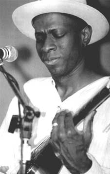

Долговязый черный парень, весь одетый по последней моде 1939 года. Шляпа стильно примята посередине, просторные брюки, истоптанные ботинки, рубашка с пристяжным воротничком, жилетка и твидовый пиджак. Он развалился на старом студийном табурете со своею гитарой. И какой-то долгожитель, кто помнил хорошо 30е годы, заметил: "Похож на призрак Роберта Джонсона”. Это Роберт Джонсон и есть. Его изображает блюзмен из Лос-Анджелеса по имени Кевин Мур. Хорошо известный нам теперь как Keб Мо.Кеб Мо получил эту свою блюзовую кличку всего пять лет назад от барабанщика своей же сопровождающей группы Лаваля Бела. А до того целых 44 года он был просто Кевином Муром, и про него мало кто знал. И вот в 94-м, на сорок пятом году жизни, назвавшись Кеб Мо, он вдруг проснулся как-то утром и обнаружил себя знаменитым и популярным. Первый его альбом был объявлен лучшим акустическим фолк-блюзовым актом года и заполучил свою "Хенди". А затем второй альбом и третий - те и вовсе взяли "Грэмми”. Толпы людей сейчас устремляются в самые престижные залы по всем городам Америки смотреть и слушать, как делает свой блюз этот парень в старомодной одежде. Кстати, билет на его шоу стоит целых 20 долларов, все равно как на Майкла Джексона. Это означает, что Кеб Мо - настоящая звезда. Как так вышло, он и сам не может понять. На этот вопрос Кевин со смехом ответил только: "Всякое ведь случается в жизни черного человека”.
Кевин Мур родился в Лос-Анджелесе в 1950-м. С детства тянулся к разным музыкальным инструментам. И мгновенно овладевал любым из них - будь то духовой, ударный или струнный. Так что Кевин - мультиинструменталист.
Гитару он освоил в 12, причем настолько мастерски, что через несколько лет сопровождал на сцене легендарного черного скрипача Папашу Джона Крича, (известного по группе “Джефферсон эйрплейн”). Но вообще-то, Кевин не собирался быть профессиональным музыкантом. Он благоразумно поступил в институт, учился на архитектора, чуть не умер там от скуки, но вовремя слинял. Затем зарабатывал на жизнь ремонтом компьютеров. Это давало деньги, но душу не согревало. А чтобы заработать музыкой в Америке, виртуозом-мультиинструменталистом быть недостаточно. В конце концов где-то в середине 70-х Кевин все-таки нашел работенку по сердцу, причем на солидной фирме “A&M Records” он получил должность штатного сочинителя. В моде были Донна Саммер и песни в стиле диско. Где-то тогда Кевин сочинил целый альбом песен, далеко не в диско-стиле. (Но и не в блюзе.) Диск вышел под лейблом “Casablanca” в количестве всего 2000 экземпляров и сейчас разыскивается охотниками за редкостями по всей Земле. Затем лет десять Кевин продолжал работать в студии, сочиняя для других, а иногда и играя для других как сессионный музыкант. Ему уже перевалило за сорок, и он не смел и мечтать о какой-то там звездной славе, но такова уж эта птица. Ее не могут ухватить матерые охотники, но вдруг она сама хватает того, кто ей приглянется.
Все, чего хотел Кевин, - так это только быть профессиональным музыкантом в обмен на скромный заработок. Такой, чтобы не возникало проблем в бытовой жизни.
- А как к этому отнеслись твои родители, Кеб? Вообще, желали ли они, чтобы ты выбрал эту профессию?
Кевин, улыбаясь, замотал своей курчавой головою:
- Па и ма все время только и повторяли: “Все музыканты пропойцы и прожигатели. Будешь перебиваться всю жизнь без денег. Да и ни одна приличная девушка не пойдет за тебя!” Такое вот будущее они обрисовали мне, когда мне было 20. И они надеялись, что я отступлю.
- А потом?
- Когда мне стукнуло 30, вот тогда-то они по-настоящему всполошились. А в 35! В 40! Это уже было нечто такое!!! Oh shit! Это словами не передашь!
- Ну, а сейчас, все ведь пошло не так, как они тебе предрекали. Сейчас-то они, наконец, успокоились?
- Да. Немного притихли. Но все равно, они-то ведь всегда мечтали видеть меня кем-то значительным по профессии и уважаемым. Ну, там архитектором или юристом.
Все для Кевина Мура сдвинулось с мертвой точки однажды, когда, выступая как-то на местной клубной сцене, его зацепил “Whodunit Band”.
- Вот где я впервые начал делать настоящий блюз! Чарли Туна - лидер бэнда - меня сразу же вдохновил на это. Какие чудеса он тогда вытворял с гитарой! Да и вообще в L.A. 80-х еще было у кого поучиться блюзу, - вспоминает Мур.
Кевин учился у больших блюзменов. Вначале у Бобби Маклюра, затем у Ловела Фулсона. Часто в L.A. заезжал Альберт Коллинз, Биг Джо Тернер и Билли Престон. Кевин всегда откликался на приглашения сыграть с этими легендами, оставаясь, впрочем, где-то невидимым на заднем плане.
- Никогда не тянуло меня красоваться на звездной орбите впереди сцены. Да я бы и сейчас оставался где-нибудь за спинами, если бы мне за это продолжали платить, - смеется Кевин. - Квинси Джонс, например, так и делает. Весь жар аудитории и аплодисменты снимают исполнители переднего плана. А слава и деньги достаются все-таки настоящему создателю шоу.
Похоже, что Кевин по природе совсем не тщеславен, но очень творческий человек. Ему просто суждено было найти дорогу в студию к своим поразительным недавним альбомом. И к своей собственной аудитории. Кеб не суетился, не бегал, не стучался в закрытые двери, не лез напролом и ничего никому не доказывал. Такой уж он несуетливый дофинист. Все - очень медленно - приходило само. Он только не ленился все это не пропускать мимо.
Как-то раздался телефонный звонок. Звонили из Голливуда. Кевину предлагали роль блюзмена тридцатых-сороковых годов в телевизионном телесериале, посвященном драматическому жизнеописанию легендарного Роберта Джонсона. Он не раздумывая, принял предложение и быстро вошел в роль. Блюз - это ведь его стихия. Да и довоенная одежда ему также пришлась по душе.
Он так и не расстается до сих пор с этой шляпой, жилеткой и ботинками. Несколько лет подряд изображая на телеэкране, а затем и на театральной сцене блюз-легенду Роберта Джонсона, Кевин Мур окончательно вжился в образ. Он пел блюз под свой старенький акустический “Гибсон” повсюду: и дома, и даже в студии, где все еще подрабатывал сессионным музыкантом. Вот тут-то его однажды и услыхало наметанное на блюз ухо продюсера Дениса Уоккера. Денис тогда только вывел в звезды Роберта Крея. Но этим не удовлетворился. Он положил руку на плечо Кевина и как бы невсерьез предложил: “Пора, Мyp, записывать твой собственный альбом”. Ему минуло 44, когда он наконец-то впервые заявил о себе как Кеб Мо. Его блюзовый первенец появился под старейшим лейблом “Okeh” в 1994 году и содержал в себе простые акустические фолк-блюзовые баллады. Несмотря на аншлаговый успех, Кевин не торопился со вторым диском. "С этим нельзя спешить! - заявил он своим суетливым продюсерам. - Нужно ждать, пока сам ход жизни у меня внутри не породит что-нибудь стоящее. А сколько лет на это уйдет, время покажет”.
Только через два с половиной года время показало второй шедевр - альбом “Just Like You”, взявший пальму первенства "Grammy Awards" на этот раз с определением "Лучший альбом современного блюза 1996 года".
- Что же это такое - современный блюз?
- Этого я не знаю, - виновато улыбаясь, отвечал Кевин. - Я просто играю и пою, что поется и играется. А определять и анализировать - это уже не моя забота.
- Но ведь ты играешь и чисто традиционный блюз, - наседали репортеры.
- Ну нет, я ведь не Мадди Уотерс, да и не Роберт Джонсон. Ведь мы живем в конце ХХ века, а не в его середине. Традиционный блюз - это все одна и та же песня без вариантов. Можно с ума сдвинуться от скуки, - говорит Кевин. - Я всего лишь стараюсь на традиционную ритм-секцию придумать что-то свое собственное. Пусть эксперты определяют, что это такое, если им не лень этим заниматься. А люди слушают, если им это нравится, вот и все.
Кеб Мо сегодня, видимо, самый допрашиваемый репортерами блюзмен. Его необычайная популярность не сделала его отношение к прессе надменным, как это бывает у многих звезд. Кевин понимает, что за прессой стоят люди, которые покупают его записи и ходят на его концерты. Для них он и поет все то, о чем он хочет с ними поделиться. Но репортеры иногда задают и каверзные вопросы. Например:
- Почему ты так часто делаешь свои концерты полностью соло? Просто вот садишься на старый табурет со своей гитарой и никого рядом из сопровождающего состава. Думаешь, ты так больше похож на Роберта Джонсона?
- Да нет. Тут все и так понятно. Один я на сцене - значит, и делиться ни с кем не надо. Все денежки целиком мои.
- Тогда зачем это ты напялил на себя эту старую шляпу и ботинки времен Великой Депрессии? Ведь хочешь все-таки сотворить облик киногероя блюза, признайся? Да и Кеб Мо - это похоже на продолжение телеспектакля, который ты разыгрываешь перед своими зрителями. Разве не так?
Кевин всегда весело посмеивается и в ответ цитирует название одной великой книги, которую он недавно прочел: “Все, что другие люди думают о тебе, это уже не твое дело”.
А он такой, какой есть - в старомодной одежде, с новым воплощением старой музыки, сегодняшний герой блюза - Кеб Мо.
Он одинаково искусно владеет всеми видами гитар. Иногда это слайдовая “Нейшнл стил”, иной раз фендоровский “Страт”, но более всего он предпочитает гибсоновскую акустику. С нею в былые времена он скромно стоял за великими спинами Роберта Крея, Джеффа Бека, Бадди Гая и Альберта Коллинза. Теперь Кевин сам на переднем плане. За его спиной - превосходно сыгранные мастера своего дела. Клавишник Томми Айр и басист Джеймс Хатчинсон (более известный по кличке Хатч), а также его неизменный барабанщик, старый дружище Лавал Бел. Тот самый Бел, который однажды, пять лет тому, прозвал Кевина Кебом Мо. И это прозвище вдруг стало ему талисманом, принесшим успех.
Александр ЧЕЧЕТТ, “Радио Мир”,
субботняя программа “Легенды ритм-энд-блюза”
Перепечатано из журнала Jazz-квадрат